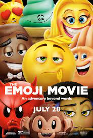

Emojis are now very popular. So popular in fact, various media have adapted them, most famously The Emoji movie in 2017. It has become widely recognizable in the mainstream on the internet. Emojis are now often viewed as an essential and mandatory part of the internet.
Emojis as already stated have become widely recognizable and seen as being mandatory on the internet nowadays. In fact, not just the internet, texting in general, sending emojis often used in favour of simple text greetings like hello. Emojis were initially viewed as more silly thsn serious but more and more businesses and professionals use emojis in professional or business emails. It is proof that emojis are now officialy their own standard and language, and a legacy of the original intenet and computer.